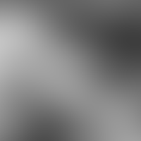

Solid Noise
Create a random cloud-like texture
X Size
Horizontal texture size
name: x-size
type: double
default: 4.00
minimum: 0.10
maximum: 16.00
ui-minimum: 0.10
ui-maximum: 16.00
ui-gamma: 1.00
ui-step-small: 0.01
ui-step-big: 1.00
ui-digits: 3
unit:pixel-distance
axis:x
Y Size
Vertical texture size
name: y-size
type: double
default: 4.00
minimum: 0.10
maximum: 16.00
ui-minimum: 0.10
ui-maximum: 16.00
ui-gamma: 1.00
ui-step-small: 0.01
ui-step-big: 1.00
ui-digits: 3
unit:pixel-distance
axis:y
Detail
Detail level
name: detail
type: int
default: 1
minimum: 0
maximum: 15
ui-minimum: 0
ui-maximum: 15
ui-gamma: 1.00
ui-step-small: 1
ui-step-big: 5
Tileable
Create a tileable output
name: tileable
type: boolean
default: False
Turbulent
Make a turbulent noise
name: turbulent
type: boolean
default: False
Random seed
name: seed
type: seed
default: 0
minimum: 0
maximum: +inf
Width
Width of the generated buffer
name: width
type: int
default: 1024
minimum: 0
maximum: +inf
ui-minimum: 0
ui-maximum: 4096
ui-gamma: 1.00
ui-step-small: 1
ui-step-big: 100
role:output-extent
unit:pixel-distance
axis:x
Height
Height of the generated buffer
name: height
type: int
default: 768
minimum: 0
maximum: +inf
ui-minimum: 0
ui-maximum: 4096
ui-gamma: 1.00
ui-step-small: 1
ui-step-big: 100
role:output-extent
unit:pixel-distance
axis:y
pads: output
parent-class: GeglOperationPointRender
categories: render
source: operations/common-gpl3+/noise-solid.c
position-dependent: true
license: GPL3+
 This page is part of the online GEGL Documentation, GEGL is a data flow based image processing library/framework, made to fuel GIMPs high-bit depth non-destructive editing future.
This page is part of the online GEGL Documentation, GEGL is a data flow based image processing library/framework, made to fuel GIMPs high-bit depth non-destructive editing future.